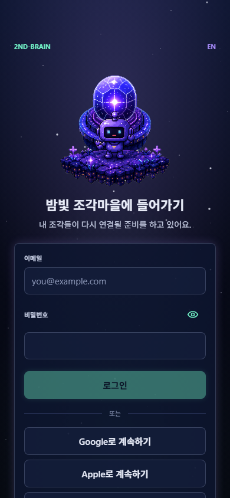
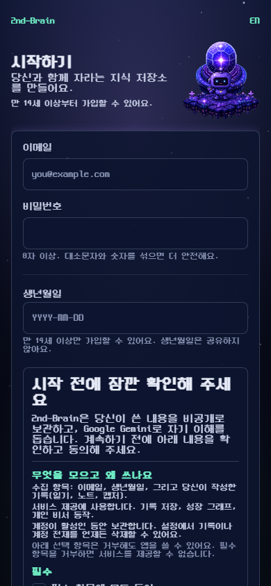
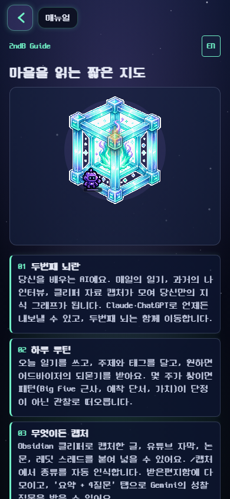
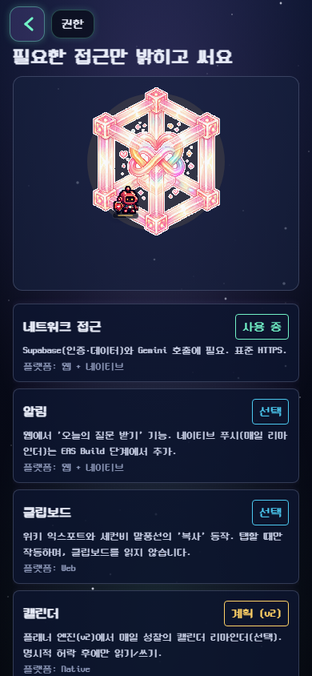
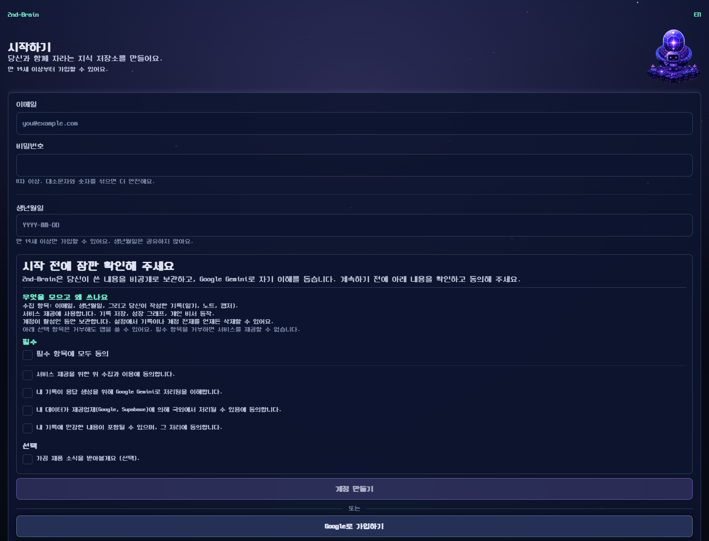
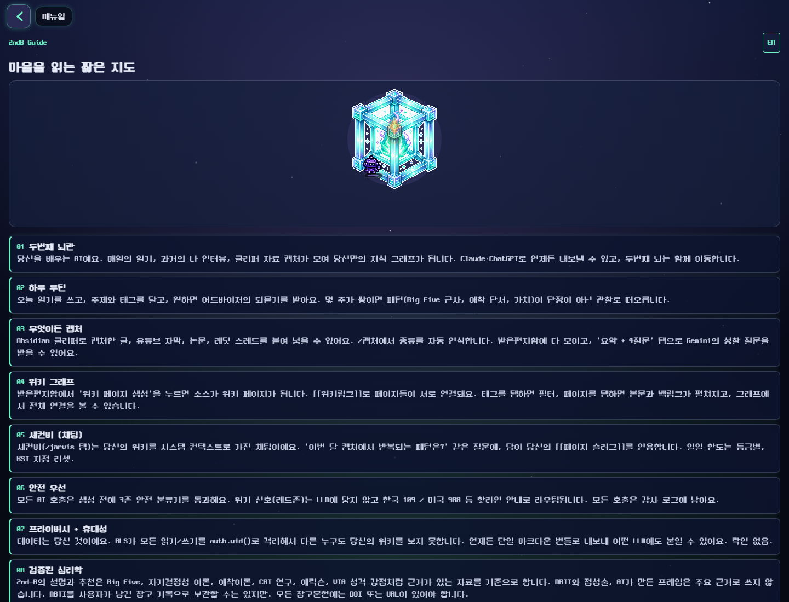
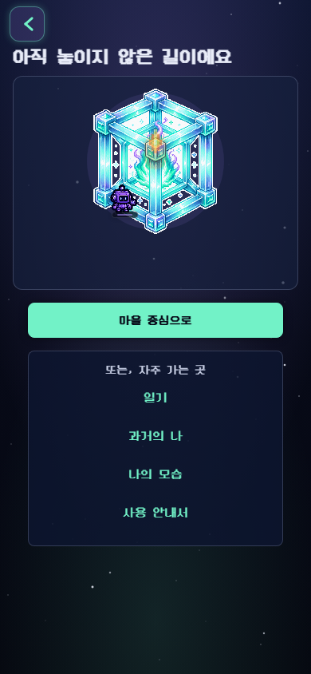

2nd-B 전체 화면 UI 추가 리뷰 + Grok 의견 반영
Codex UI/UX lane 기준 추가 보고. Grok의 X 소비자 리스크 리서치를 읽고, 현재 2nd-B 화면 구조가 그 리스크를 얼마나 해소하는지 매핑했다.
결론
P0 방향
첫 화면과 가이드 화면이 아직 데스크톱에서 content lane 없이 전체 폭으로 벌어진다. 모바일 가로 overflow는 이번 작업트리에서 해소됐지만, 데스크톱 완성도는 낮다.
P1 방향
Grok의 핵심 리스크인 maintenance fatigue, privacy, sovereignty, Barnum skepticism이 로그인, 매뉴얼, 설정, 지원 화면에서 아직 즉시 해소되지 않는다.
P1 IA
/journal, /trinity, /mbti 잔여 진입점이 줄었지만 아직 남아 있다. 출시 IA는 Capture, Jarvis, Wiki, Records, Profile/Settings 중심으로 수렴해야 한다.
Grok 의견을 UI 우선순위로 번역
| Grok 리스크 | UI/UX 해석 | 현재 화면에서 보이는 문제 | Codex 권장 |
|---|---|---|---|
| Maintenance fatigue, second job | 앱이 처음부터 해야 할 일이 많아 보이면 시장 불신을 강화한다. | 회원가입 동의, 매뉴얼, 설정 danger zone, 프로필 허브가 정보량이 많고 기능 나열형이다. | 첫 5분 플로우는 "하루 1개 조각만 남기면 나머지는 AI가 정리"로 좁히고, 고급/삭제/평가 기능은 후순위로 접는다. |
| Company betrayal, sovereignty cynicism | 데이터를 언제든 내보낼 수 있다는 신뢰 신호가 첫 화면부터 보여야 한다. | 로그인 전에는 privacy, data, support 화면이 대부분 sign-in으로 돌아가며, 매뉴얼도 export/local 메시지가 부차적이다. | 로그인 전 공개 trust center를 만든다. "full export", "source visible", "delete anytime", "local option roadmap"을 첫 화면/매뉴얼/권한 화면에 연결한다. |
| Privacy and creepiness | "너를 학습"은 강점이지만 "AI가 너무 많이 안다"로 읽힐 수 있다. | 권한 화면은 좋지만 별도 섬이고, 로그인/가입 화면에는 red-zone, source transparency, analytics consent 신호가 약하다. | 가입 전 짧은 신뢰 문장 3개를 고정한다: source-backed, user-owned, no diagnosis. 긴 법적 문구와 분리한다. |
| Barnum/MBTI skepticism | 심리 화면은 "검사 앱"처럼 보이면 바로 신뢰를 잃는다. | MBTI는 profile/persona 메인 노출에서 내려갔지만 route는 남고, docs에는 TIPI/MBTI/Trinity 잔재가 있다. | MBTI는 deep-link/reference only. Persona/Insights/Core Brain은 모든 판단 카드에 evidence route와 confidence copy를 붙인다. |
| Another AI journal wrapper | 화면 수가 많을수록 "또 기능 많은 wrapper"처럼 보인다. | 39개 route 중 보조/레거시/설정성 화면이 많다. Profile과 Settings가 모두 허브 역할을 한다. | 출시 노출 sitemap을 5개 탭 + Profile + Settings로 제한하고, 연구/평가/데이터는 profile/settings 하위로 접는다. |
검증 결과
- PASS
npm run lint - PASS
npm run type-check - PASS
npm run check:i18n- 204 keys, 9 namespaces - PASS
npm run check:emdash - PASS/PART
npm run check:constraints- C11은 기존 PART - PASS 공개 화면 width metric: mobile
scrollWidth=390, desktopscrollWidth=1440
런타임 콘솔 반복 경고:
shadow* deprecated, props.pointerEvents deprecated, useNativeDriver JS fallback, password field not inside native form. 크래시는 없었지만 웹 품질/접근성 이슈로 관리 필요.공개 화면 캡처








주요 발견
| Severity | 발견 | 근거 | 권장 |
|---|---|---|---|
| P0 | Desktop content lane 부재 | PremiumAppShell은 padding만 제공. /sign-in은 paddingHorizontal: 24, sign-up/manual/support류는 route lane maxWidth가 없다. |
공통 ScreenLane 또는 route별 maxWidth 계약을 만든다. Auth 560/640, guide 720, settings 760, dashboard 1040 등. |
| P1 | Trust/support가 로그인 뒤로 숨어 있다 | /support, /privacy, /data, /account, /theme는 비로그인 시 /sign-in으로 redirect. |
로그인 전 trust center: support, privacy summary, export/delete policy, AI/source policy는 공개한다. |
| P1 | /journal 잔여 진입점 |
audit, core-brain, +not-found, wiki, trinity, settings, insights, persona, index, onboarding, lib evidence routes. |
사용자-facing CTA는 /capture 또는 /records로 바꾼다. /journal은 redirect-only compatibility로 숨긴다. |
| P1 | Settings가 너무 많은 일을 한다 | Navigation hub, theme, crew density, partial delete, assessment delete, wiki/source delete, full wipe, sign out가 한 화면에 모두 있음. | Settings는 account/privacy/data/theme/support 하위로 분리하고 danger zone은 별도 confirm flow로 둔다. |
| P1 | DESIGN.md와 실제 shared UI의 불일치 | LinearGradient/RadialGradient, "glassy" 주석, shadows/elevation, raw rgba/hex가 shared primitive와 route 전반에 존재. |
DESIGN에 art-only glow 예외를 명시하고, surface/button/card shadow와 glass wording은 제거한다. |
| P2 | 텍스트 밀도와 픽셀 폰트 피로 | manual, sign-up consent, permissions, settings danger copy가 모두 NeoDunggeunmo 본문 밀도로 길다. | 픽셀 폰트는 heading/label 중심, 긴 설명은 읽기용 body face 또는 짧은 accordion 형태로 조절한다. |
39개 화면별 전수 판정
| Route | 판정 | Codex 의견 |
|---|---|---|
src/app/(auth)/_layout.tsx | OK | auth group infra. 별도 UI 이슈 없음. |
src/app/(auth)/sign-in.tsx | P0 | 모바일 폭은 개선됐지만 desktop form lane 없음. support/privacy 신뢰 신호가 약함. |
src/app/(auth)/sign-up.tsx | P0 | desktop lane 없음. 동의문이 첫 가입 화면을 압도해 Grok의 maintenance fatigue 리스크를 키움. |
src/app/(auth)/complete-profile.tsx | P1 | OAuth 후 필수 화면. sign-up과 같은 lane/consent 계약 필요. 비로그인 캡처는 sign-in redirect 정상. |
src/app/(auth)/oauth-callback.tsx | OK | 전환용 화면. 실패/대기 카피만 짧고 명확하면 충분. |
src/app/_layout.tsx | P1 | global BackArrow/TabBar는 좋음. Stack에는 journal, trinity, mbti가 남아 compatibility임을 문서/IA에서 분명히 해야 함. |
src/app/+html.tsx | OK | HTML infra. UI 판정 제외. |
src/app/+not-found.tsx | P1 | 시각은 안정적이나 common destinations에 Journal 잔재. Capture로 교체. |
src/app/index.tsx | P1 | 메인 그래프. empty CTA가 /journal로 이동. 출시 첫 성공 행동은 /capture여야 함. |
src/app/capture.tsx | P1 | 핵심 입력 화면. 기능이 많아지는 중이므로 mode segmentation과 bottom composer clearance를 QA해야 함. |
src/app/jarvis.tsx | P1 | 핵심 assistant. Composer, evidence chips, modal이 tab bar/keyboard와 충돌하지 않는지 네이티브 QA 필요. |
src/app/wiki.tsx | P1 | 지식 창고 핵심. /journal 링크 2개 잔재. export/source transparency를 더 전면화할 가치 있음. |
src/app/records.tsx | P2 | 기록 보관소. 긴 리스트가 ScrollView 구조라 네이티브 성능 리스크. UI는 필터/검색 밀도 점검 필요. |
src/app/record/[id].tsx | P2 | 상세 화면. evidenceRoute가 journal/imagine 같은 compatibility route로 갈 수 있음. |
src/app/inbox.tsx | P2 | 받은편지함. Capture/Wiki 연결은 좋음. 데이터가 많을 때 리스트 가상화 필요. |
src/app/import.tsx | P2 | 외부 자료 가져오기. Grok의 sovereignty hook과 맞음. first-run trust flow와 연결하면 가치 큼. |
src/app/formats.tsx | P2 | 캡처 템플릿 관리. 고급 화면으로 profile/settings 하위 노출이 적절. |
src/app/data.tsx | P1 | 데이터 관리가 로그인 뒤에만 있음. 최소한 export/delete 설명은 공개 trust center로 분리. |
src/app/profile.tsx | P1 | MBTI 메인 노출은 제거됨. 다만 Profile과 Settings 둘 다 허브 역할이라 IA 중복. |
src/app/settings.tsx | P1 | 가장 과밀. full wipe 후 /journal redirect. danger actions는 별도 flow 필요. |
src/app/privacy.tsx | P1 | 신뢰 핵심인데 로그인 필요. 공개 요약 화면 또는 sign-up trust link 필요. |
src/app/account.tsx | P2 | 계정 관리. delete account 문맥은 support/privacy/data와 일관된 confirmation copy 필요. |
src/app/theme.tsx | P2 | 보조 설정. 현재 product trust보다 우선순위 낮음. |
src/app/support.tsx | P1 | 비로그인 상태에서 sign-in redirect. 로그인 실패/개인정보 문의를 위해 public이어야 함. |
src/app/manual.tsx | P1 | TIPI/MBTI 일부 수정됨. desktop lane 없음, 본문 밀도 높음. Grok hook 중심으로 더 짧게 재구성. |
src/app/permissions.tsx | OK/P2 | 공개 접근 가능하고 신뢰 메시지로 유용. 다만 body copy가 길어 scan-friendly하게 정리 필요. |
src/app/onboarding.tsx | P1 | firstRun이 /journal로 감. Capture로 바꾸고 "1 entry only" 약속을 강조. |
src/app/persona.tsx | P1 | MBTI 평가 CTA 제거됨. "Back to journal" 잔재. 판단 카드에는 source/confidence를 더 붙여야 Barnum 리스크가 줄어듦. |
src/app/big-five.tsx | OK/P2 | BFI-44로 정렬. 평가 화면은 진행/저장 후 evidence 연결 유지. |
src/app/attachment.tsx | OK/P2 | ECR-S 평가. Big Five와 같은 평가 UX consistency 유지. |
src/app/mbti.tsx | P1 | 참고용 라벨 추가됨. 직접 route는 유지하되 profile/persona primary IA에서 계속 숨김 유지. |
src/app/audit.tsx | P1 | 완료/취소 CTA가 /journal로 이동. Persona 또는 Capture로 변경. |
src/app/interview.tsx | P2 | 채팅형 평가. keyboard/safe area와 source 저장 UX QA 필요. |
src/app/insights.tsx | P1 | empty/CTA가 /journal로 이동. Insights는 source transparency를 강화할 핵심 화면. |
src/app/research.tsx | OK/P2 | validated psych 신뢰를 지탱하는 화면. manual/profile에서 더 명확히 연결. |
src/app/core-brain.tsx | P1 | 중심 대시보드. /journal CTA 잔재. Grok 기준으로 "memory augmentation, not replacement" 카피가 필요. |
src/app/trinity.tsx | P1 | legacy 분석 화면. Profile 하위 deep link로만 유지하거나 Core Brain으로 흡수. |
src/app/journal.tsx | compat | redirect-only compatibility로 유지 가능. 사용자-facing 링크는 제거. |
src/app/imagine.tsx | compat | Jarvis divergent redirect. 사용자-facing route로 노출하지 않으면 OK. |
Claude에게 권장하는 다음 작업 순서
- 공통 content lane 계약부터 적용: auth, guide, settings, dashboard 별 maxWidth.
/journal사용자-facing 링크 전부/capture또는/records로 교체.- 로그인 전 공개 trust center 또는 manual trust section 추가: export, delete, source, no diagnosis, privacy.
- Settings 분리: Theme/Profile/Privacy/Data/Support/Danger zone을 하위 화면으로 정리.
- Shared UI에서 glass/shadow/gradient 정책을 DESIGN.md와 맞추거나 art-only 예외를 문서화.